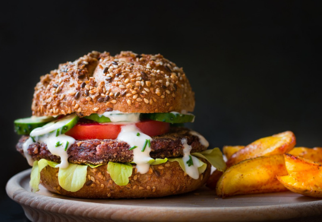

üçîVeganmore_vert
Tiempo de preparación: 15'
whatshotTiempo de cocción: 10'
restaurantDificultad: baja
Antes de empezar a preparar nuestros tacos veganos es muy importante realizar este paso previo; hidratar la soja texturizada. Esta se comercializa en seco y para poderla consumir debemos hidratarla. La pondremos en un bol o plato hondo y la cubriremos con agua. Seguiremos las instrucciones del fabricante ya que dependiendo del tipo de soja texturizada que hayamos comprado necesitará un tiempo u otro de hidratación. En este caso, la he tenido en agua 20 minutos. Una vez pasado el tiempo de hidratación que marca el fabricante, la escurrimos y reservamos.
Para preparar el guacamole lo primero que haremos será cortar el aguacate por la mitad con un cuchillo, una vez abierto le quitaremos el hueso (yo lo hago clavando la hoja del cuchillo en el hueso y girando 45º). Con la ayuda de una cuchara sacaremos la pulpa del aguacate y la pondremos en el vaso del procesador de alimentos. A continuación, añadiremos los ajos pelados, los anacardos crudos, la albahaca, el aceite de oliva virgen extra (AOVE), la sal y la pimienta. Procesaremos todos los ingredientes hasta que queda una pasta homogénea. El resultado será una salsa un poco espesa pero la queremos así para que nos quede perfecta al realizar el siguiente paso. El siguiente paso será cortar el tomate en cuadrados pequeños, lo pondremos en un bol y añadiremos la salsa de aguacate. Lo mezclaremos todo. Veréis que gracias al agua del tomate la salsa nos queda más líquida, que es la textura que queremos para que acompañe a nuestros tacos. Si no queréis añadir tomate, podéis incorporar un poco de agua a la salsa de aguacate para que nos quede una textura similar.
Para preparar la masa de los tacos es tan fácil como seguir esta receta de tortillas de trigo. En este caso, he utilizado harina de espelta integral con lo que me ha hecho falta un poquito más de agua (unos 100 ml). Una vez las saquéis de la sartén, yo ya les doy la forma de taco para que después no cueste tanto doblarlas.
Vamos a preparar todos los ingredientes con los que vamos a rellenar estos tacos veganos. Lo primero que debemos hacer es lavar el pimiento rojo y el pimiento verde. A continuación, cortamos la cebolla en juliana fina y el pimiento rojo y verde en juliana más gruesa. Ponemos el wok o la sartén a fuego fuerte con una cucharada de aceite de oliva virgen extra, cuando el aceite esté caliente incorporamos la cebolla y una pizca de sal, doramos. A continuación, añadimos el pimiento verde y salteamos. Incorporamos también el pimiento rojo y salteamos todo junto hasta que la verdura quede al dente.
Ahora añadimos el vinagre de arroz, removemos y esperamos a que se evapore. El siguiente paso añadir la soja texturizada, que ya habremos hidratado y escurrido. Salteamos junto a la cebolla y los pimientos y añadimos el pimentón y la pimienta. Salteamos todo junto y corregimos especias.
Con las tres elaboraciones preparadas, vamos a proceder al último paso para poder disfrutar de nuestros tacos veganos. En el centro de una de las tortillas que utilizaremos para los tacos, añadimos el relleno de soja texturizada y verduras que hemos preparado en el paso anterior. A continuación, añadimos por encima la salsa de aguacate y tomate. Repetimos la operación con las otras 3. Si os gusta el picante podéis añadir unas gotas de tabasco por encima de la salsa de aguacate. ¡Preparaos para una explosión de sabor!